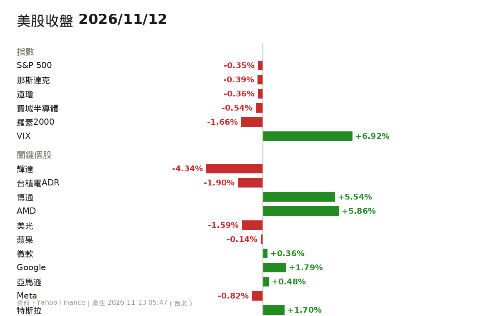
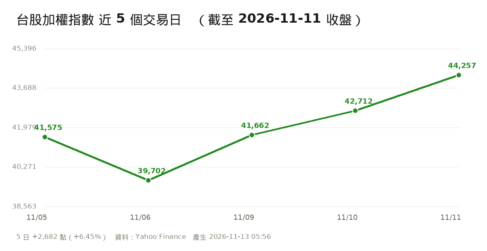

⚠️ 本份為 12:45 盤中快照，台股 13:30 收盤，數字會再變動。07:00 排程今日未產出，本份為補發。
來源：
財經頻道/Emmy追劇時間/Emmy重點提醒追蹤.md。未解除就會每天出現；判定解除當天標「過期」，隔天起不再列出。
不是。時間序對不上。
| 時間 | 事件 | 性質 |
|---|---|---|
| 11/05 | 民主黨期中選舉壓倒性大勝 → 市場擔心 AI 資料中心與科技業監管收緊 | 政策事件 |
| 11/05 美股 | 道瓊 -1,833.06（-3.44%）、S&P -4.36%、那斯達克 -5.5%、費半 -12.25%（史上第二大單日跌幅，僅次 2020/3/16） | 已發生 |
| 11/06 台股 | 開低 2,658 點，盤中最低 37,837（史上最大盤中跌點 3,737 點），跌破年線；台積電、聯發科開盤跌停；上市櫃跌停一度逾 500 檔 | 已發生 |
| 11/09 | 國安基金進場＋限空令，加權強彈 1,960 點（史上第二大收盤漲點） | 已發生 |
| 11/10（美東） | CoreWeave 公布 Q3 財報 → 11/11 美股大漲、費半 +5.66% | 已發生（是反彈的利多，不是崩盤的原因） |
結論：崩盤的引爆點是**「民主黨大勝 → AI 監管恐慌」，加上外資大舉賣超、融資籌碼未洗淨。 CoreWeave 是崩盤之後**（11/10）才公布財報，而且財報是利多；它是 11/11 大漲的推手之一，不是下跌的兇手。把兩件事綁在一起講，是典型的事後歸因。
已發生：11/10 正式財報公告 但「改善」只成立在營收與指引，獲利仍在惡化
| 項目 | 數字 | 判讀 |
|---|---|---|
| 營收 | 36.61 億美元，年增 +168% | 優於市場預估 35.5 億 ✅ |
| 營業利益 | 2.07 億美元，年增 +298%，營益率 6%（去年 4%） | 本業轉好 ✅ |
| 調整後 EBITDA | 22.56 億美元，margin 62% | 很強 ✅ |
| 淨損 | 7.09 億美元（去年同期 1.10 億，惡化 6 倍多） | ❌ 重點 |
| 淨利息費用 | 8.46 億美元（去年 3.10 億） | ❌ 利息吃掉獲利 |
| 每股虧損 | -1.27（GAAP）／-0.95（LSEG 調整後，優於預期 -1.16） | 兩個版本都有，別只看一個 |
| 已簽約未認列營收 | 1,325 億美元（6 月底 1,040 億、去年 556 億） | ✅ 需求能見度高 |
| 總債務 | 469 億美元 | ❌ 槓桿高 |
| 單季資本支出 | 145 億美元（前季 94 億） | 燒錢加速 |
| 2026 全年營收指引 | 上調至 130～133 億美元（原 124～132 億） | ✅ 真的上調 |
還沒發生的（管理層的「預期」）
一句話：CoreWeave 的問題不是「需求不夠」，是「借太多錢、利息太貴」。 營收年增 168% 是真的，淨損擴大 6 倍也是真的。只看一邊就會被誤導。
已發生：啟動路演、公布價格區間 消息面：超額認購（彭博引述知情人士）
| 項目 | 狀態 |
|---|---|
| 6/1 保密遞交 IPO 申請 | ✅ 已發生 |
| 美東 11/10 啟動路演，價格區間 每股 70～78 美元 | ✅ 已發生 |
| 預計 11/18 定價、11/19 那斯達克掛牌（代號 ANT） | ⏳ 還沒發生 |
| 最多募約 643.5 億美元；Google、輝達、台積電等 7 家基石投資人認購 260 億，合計上看 904 億 | ✅ 條款已公布 |
| 「數倍超額認購」 | 🟡 彭博引述知情人士，公司未證實 |
| 11/9 曾傳「近 700 億美元 IPO 定價突然撤回」 | 🟡 媒體報導，過程有反覆 |
怎麼用這條資訊：超額認購是「認購意願」，不是「錢已經進來」。 真正能確認的時間點是 11/18 定價 —— 落在區間上緣（78 美元）才算利多兌現；落在下緣或破發就是利空。在那之前，只能當氣氛指標，不能當買進理由。
美股 11/11 因 CoreWeave 財報大漲（費半 +5.66%），但輝達盤後因黃仁勳人事傳聞一度重挫約 10%，把利多整段吃掉；台股開高後一路走低，12:45 加權 43,546.15（-711 點、-1.61%），三檔持股全部走弱。這是「個別事件＋漲多回檔」，不是趨勢轉空。
| 指數 | 收盤 | 漲跌 |
|---|---|---|
| S&P 500 | 7,619.38 | +1.31% |
| 那斯達克 | 25,466.19 | +1.60% |
| 道瓊 | 52,486.50 | +0.49% |
| 費城半導體 | 10,564.11 | +5.66% |
| VIX 恐慌指數 | 17.49 | -10.12% |

上漲主因
盤後變數（關鍵）
| 項目 | 數值 |
|---|---|
| 加權指數 | 43,546.15（-711.00、-1.61%） |
| 開盤 | 44,180.46（-76.69） |
| 最高 | 44,525.24 |
| 最低 | 43,462.47 |
| 成交金額 | 11:55 已 6,235.91 億元 |

盤勢節奏：開低 → 盤初跌 378 點回測 44,000 → 聯發科、台達電翻紅帶動指數翻紅至 44,525 → 黃仁勳消息發酵 → 一路往下，12:45 跌 711 點，接近今日低點。
我的三檔（12:42～12:45）
| 代碼 | 成交價 | 漲跌 | 開 / 高 / 低 | 成交量 |
|---|---|---|---|---|
| 2330 台積電 | 2,360 | -1.46% | 2,385 / 2,395 / 2,355 | 19,762 張 |
| 2454 聯發科 | 3,865 | -3.13% | 4,050 / 4,120 / 3,860 | 9,707 張 |
| 8299 群聯 | 1,675 | -3.18% | 1,725 / 1,765 / 1,675 | 2,672 張 |
注意：聯發科早盤還抗空（一度 4,120），12:43 轉為大跌 3.13%；群聯現價 1,675 就是今日最低，賣壓還沒停。三檔由「小跌」變成「齊跌」，是今天最重要的變化。
11/11 回顧（昨日大漲的體質）
先講限制：知識庫裡最新完整筆記是 11/09 一綺聊股「外資殺紅眼」。 11/10、11/11 的影片只有 attachments，沒有筆記與逐字稿 —— 22:00 歸檔沒跑完。這兩天的內容我沒有可靠資料，不補寫、不猜。
🔴 看多／加碼（11/09 一綺聊股）
🟢 危機／減碼（11/09 一綺聊股）
事後對照：她 11/09 講的「外資空單破 10 萬口」風險，這兩天並沒有兌現，反而連 4 紅彈了 4,555 點。 但 11/11 外資仍賣超 7.66 億 —— 空單有沒有回補，是本週多空真正的分水嶺。
| 日期 | 她提出的現象／危機 | 對台股意義 |
|---|---|---|
| 11/12 | 黃仁勳風險在「走私晶片＋遊說禁令」的國安層級，不是技術洩密 | 換 CEO 影響的是供應鏈議價，不是技術 |
| 11/08 | 崩盤是「民主黨大勝→AI 監管恐慌」，不是需求轉弱 | 若成立，反彈是修復；若真立法，AI 鏈重定價 |
| 11/01 | 事前問「熊市要來了嗎、該獲利了結嗎」（早崩盤 4 天） | 本波少數事前提示，事後看方向對了 |
| 10/29 | 布蘭特逼近 120 美元 → 通膨 → 股市跌 | 油價是外部成本，壓抑電子股評價 |
留言區值得注意：按讚第 2 高（8 讚）是「說台股五萬點的也是你、說會員躲過股災的也是你」——她的訂閱者已有人在質疑這種「漲也對、跌也對」的敘事。看她的產業判斷，不要看她的績效宣稱。
2026年11月09日 外資殺紅眼！大砍900億．期貨空單破10萬口！台股反彈能撐多久？
🔗 筆記：財經頻道/一綺聊股/2026-11-09_外資殺紅眼！大砍900億/筆記.md
⚠️
2026-11-11_大摩開槍降評記憶體旺宏（2026-11-11）目前只有附件、沒有筆記，所以上面是 2026-11-09 這一集。
| 代碼 | 名稱 | 現價 | 漲跌 | 成交量 |
|---|---|---|---|---|
| 2330 | 台積電 | 2,340.0 | -2.30% | 28,991 張 |
| 2308 | 台達電 | 1,240.0 | -4.25% | 14,791 張 |
| 2454 | 聯發科 | 3,850.0 | -3.51% | 11,996 張 |
| 3443 | 創意 | 7,860.0 | -0.32% | 3,346 張 |
| 2383 | 台光電 | 4,105.0 | -8.78% | 4,262 張 |
| 2408 | 南亞科 | 379.5 | -3.68% | 59,023 張 |
| 3037 | 欣興 | 792.0 | -8.33% | 27,426 張 |
| 1802 | 台玻 | 81.7 | +6.52% | 483,656 張 |
| 1303 | 南亞 | 293.0 | -6.39% | 148,617 張 |
| 2327 | 國巨* | 407.0 | -4.12% | 36,294 張 |
| 2368 | 金像電 | 975.0 | -7.14% | 10,867 張 |
| 2344 | 華邦電 | 127.5 | -6.59% | 76,354 張 |
| 代碼 | 名稱 | 今日 | 連續 | 近 5 日累計 | 近 10 日累計 |
|---|---|---|---|---|---|
| 1802 | 台玻 | +140,326 | 買超 5 天 | +264,796 | +265,727 |
| 2408 | 南亞科 | +2,870 | 買超 3 天 | +19,821 | -10,856 |
| 2454 | 聯發科 | +1,638 | 買超 1 天 | -7,846 | -25,591 |
| 2383 | 台光電 | +201 | 買超 1 天 | -3,305 | -6,705 |
| 2327 | 國巨* | +2,248 | 買超 3 天 | +1,978 | -30,847 |
| 3443 | 創意 | +41 | 買超 1 天 | -996 | -1,937 |
| 2330 | 台積電 | -3,955 | 賣超 1 天 | -37,702 | -104,899 |
| 3037 | 欣興 | -1,390 | 賣超 2 天 | -17,914 | -35,130 |
| 1303 | 南亞 | -5,163 | 賣超 2 天 | -16,729 | -81,677 |
| 2308 | 台達電 | -1,967 | 賣超 11 天 | -10,829 | -30,332 |
| 2344 | 華邦電 | -4,534 | 賣超 3 天 | -9,646 | -79,920 |
| 2368 | 金像電 | -1,124 | 賣超 2 天 | -3,745 | -7,964 |
法人資料截止：2026-11-12（TWSE T86）｜報價時間 13:30:00
追蹤 5 檔 AI／半導體 ETF（5 家不同發行商）的前 25 大持股；≥4 檔同時持有才列入。 ETF：SMH、SOXX、XLK、QQQ、VGT ｜ 查詢：2026-11-12 18:44
| 股票 | 名稱 | 持有 ETF 檔數 | 哪幾檔 | 合計權重 |
|---|---|---|---|---|
| NVDA | NVIDIA Corporation | 5 | QQQ、SMH、SOXX、VGT、XLK | 63.9% |
| AMD | Advanced Micro Devices, In | 5 | QQQ、SMH、SOXX、VGT、XLK | 28.3% |
| AVGO | Broadcom Inc. | 5 | QQQ、SMH、SOXX、VGT、XLK | 25.9% |
| MU | Micron Technology, Inc. | 5 | QQQ、SMH、SOXX、VGT、XLK | 22.9% |
| TXN | Texas Instruments Incorpor | 5 | QQQ、SMH、SOXX、VGT、XLK | 15.4% |
| INTC | Intel Corporation | 5 | QQQ、SMH、SOXX、VGT、XLK | 14.3% |
| AMAT | Applied Materials, Inc. | 5 | QQQ、SMH、SOXX、VGT、XLK | 12.8% |
| LRCX | Lam Research Corporation | 5 | QQQ、SMH、SOXX、VGT、XLK | 11.8% |
| ADI | Analog Devices, Inc. | 4 | SMH、SOXX、VGT、XLK | 12.1% |
| QCOM | QUALCOMM Incorporated | 4 | SMH、SOXX、VGT、XLK | 11.0% |
| KLAC | KLA Corporation | 4 | SMH、SOXX、VGT、XLK | 10.7% |
| MRVL | Marvell Technology, Inc. | 4 | SMH、SOXX、VGT、XLK | 8.4% |
12 檔符合 ≥4 檔 ETF 共識
（與上次相比，這 5 檔 ETF 的前 25 大持股沒有變動）
⚠️ 這是「被動資金需求」的參考，不是買進建議。ETF 納入常發生在股價已漲之後，刪除則常在跌完之後。
S（優勢）
W（劣勢）
O（機會）
T（威脅）
| 日期 | 事件 | 性質 |
|---|---|---|
| 11/12（四） | 美國 GDP（台北 21:30） | 已排定 |
| 11/18（三） | Anthropic 定價（區間 70～78 美元） | 待發生 |
| 11/18（三） | 輝達（NVDA）財報 ← 本季最關鍵 | 待發生 |
| 11/19（四） | Anthropic 那斯達克掛牌（代號 ANT） | 待發生 |
| 12 月 | 下次 FOMC（10/28 維持 3.75～4.00%） | 待發生 |
即時報價：TWSE MIS getStockInfo（12:42～12:45 逐筆）、本機看板 127.0.0.1:8787。
法人數據：TWSE BFI82U（20261111）。
美股：Yahoo Finance chart API（preopen_us.py，11/12 05:00～06:15）。
新聞查證
限制
產生時間：2026-11-12 12:50（台北）｜盤中補發
捲到任何位置，都可以按右下角的 ↑ 回到最上面。
這一頁放的是跟股市無關、但你需要每天看一眼的東西。更新時間：2026-11-12 21:52
Even Realities Even G2 AI 智慧眼鏡（目標價 NT$12,000）
未達標 目前最低 NT$15,000，距目標還差 NT$3,000
NT$15,000 露天 ↗
Even Realities G2 智慧眼鏡附保護盒 9成新 8月購買 平光
NT$16,000 蝦皮 ↗
Even G2智慧眼鏡 二手
NT$17,820 樂天 ↗
Even Realities AI眼鏡套裝G2 B方框 全新未拆封 商品未拆未使用可以7天內申請退貨,如…
NT$17,820 樂天 ↗
Even Realities AI眼鏡套裝G2 A圓框 全新未拆封 商品未拆未使用可以7天內申請退貨,如…
NT$18,000 蝦皮 ↗
HS⚑ Even Realities G2 智能眼鏡 AI眼鏡 AR眼鏡 即時翻譯 提詞顯示
NT$18,000 BigGo ↗
Even Realities AI眼鏡套裝G2 A圓框 全新未拆封 商品未拆未使用可以7天內申請退貨,如…
NT$18,000 BigGo ↗
Even Realities AI眼鏡套裝G2 B方框 全新未拆封 商品未拆未使用可以7天內申請退貨,如…
NT$18,500 旋轉拍賣 ↗
even G2 智能眼鏡
公司貨（台灣代理 iNNOHOME）定價 NT$19,990。上表已排除中國代購起價與配件。 比價時間：2026-11-12T21:52 ｜ 完整報價見
00陳裕豐/比價/EvenG2智能眼鏡.md
未達標 最低組合 NT$22,990，距目標還差 NT$7,990
市場沒有「G2＋R1」成套賣場，以下為「G2 ＋ 官方 R1（7,990）」的拆買估算。
NT$22,990 露天・拆買・二手 ↗
Even Realities G2 智慧眼鏡附保護盒 9成新 8月購買 平光… ＋ R1 智慧戒指
NT$23,990 蝦皮・拆買・二手 ↗
Even G2智慧眼鏡 二手… ＋ R1 智慧戒指
NT$25,810 樂天・拆買・全新 ↗
Even Realities AI眼鏡套裝G2 B方框 全新未拆封 商品未拆未使… ＋ R1 智慧戒指
NT$25,810 樂天・拆買・全新 ↗
Even Realities AI眼鏡套裝G2 A圓框 全新未拆封 商品未拆未使… ＋ R1 智慧戒指
NT$25,990 蝦皮・拆買・全新 ↗
HS⚑ Even Realities G2 智能眼鏡 AI眼鏡 AR眼鏡 即時翻… ＋ R1 智慧戒指
NT$25,990 BigGo・拆買・全新 ↗
Even Realities AI眼鏡套裝G2 A圓框 全新未拆封 商品未拆未使… ＋ R1 智慧戒指
NT$25,990 BigGo・拆買・全新 ↗
Even Realities AI眼鏡套裝G2 B方框 全新未拆封 商品未拆未使… ＋ R1 智慧戒指
NT$26,490 旋轉拍賣・拆買・全新 ↗
even G2 智能眼鏡… ＋ R1 智慧戒指
NT$15,000 FB 社團 ↗
售 EVEN G2 智慧眼鏡｜全新未拆封｜公司貨／保固｜附購買證明（原價 19,990）
（賣家在同一社團重複貼文，可信度較高；需私訊確認是否還在）
價格未標（需私訊） FB 社團 ↗
我要出售極新的 Even G2 智慧眼鏡｜本月購入｜新竹自取
（貼文未標價，要私訊問；8 小時前發文，可能還在）
價格未標（需私訊） Even Realities 雙11 ↗
11.11 無痛大升級：11/1～12/13 指定組合現折 2,000～4,000 元
（旗艦全配（G2＋R1＋夾片）折 4,000；G2＋R1 或 G2＋夾片折 2,000。單機不適用，要買組合才有。通路：全國電子、法雅客、誠品、台灣大哥大、momo、Yahoo、PChome、iINOHOME）
查詢時間：2026-11-12 19:05｜FB 社團與 Mobile01 無法穩定自動抓取（FB 需登入、Mobile01 對外封鎖），此區由搜尋索引＋人工維護；Mobile01 目前只有討論串、沒有市集讓售。
產生時間：2026-11-12 21:52（台北）